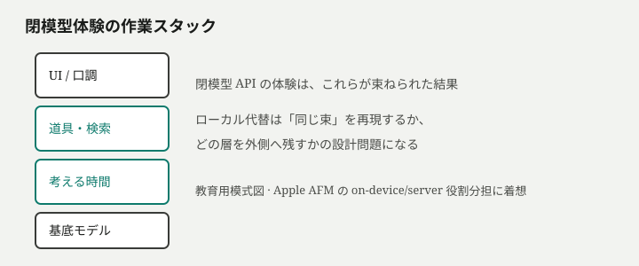
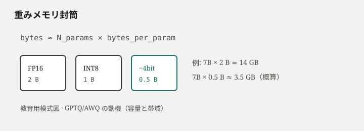
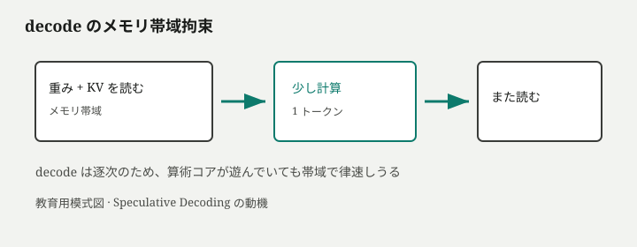
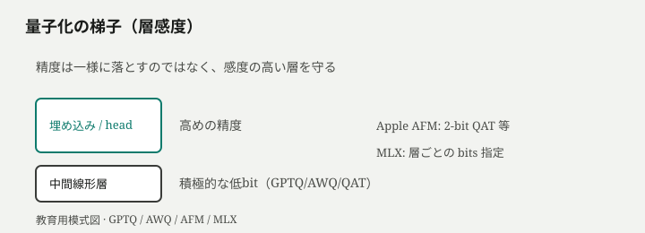
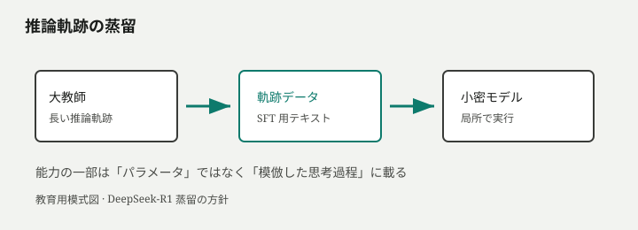
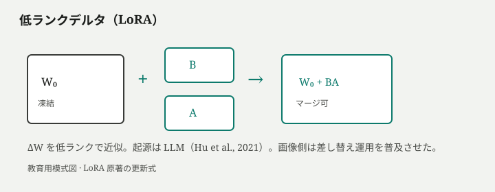
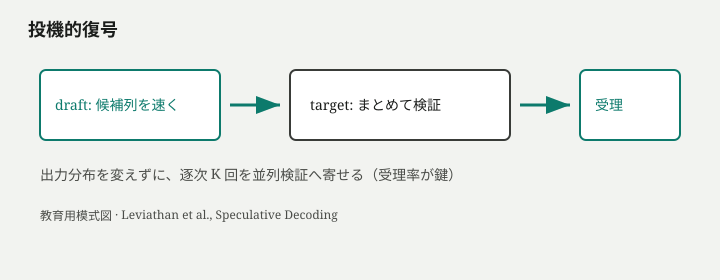

同じ仕事を、クラウドの閉模型と手元のオープン模型に投げると、片方は滑らかに通り、もう片方はメモリ不足で落ちるか、遅すぎて会話にならない。なのにベンチマーク表では「小モデルが大モデルに迫る」と書かれている。画面の摩擦は「性能不足」に見えるが、実際に詰まっているのが重みの大きさなのか、文脈の長さなのか、逐次生成の帯域なのか、読者は日常的に切り分けられないまま、再び API キーに戻ってしまう。
クローズドモデルへの依存を「賢いから仕方ない」で片づけると、代替の設計権が残らない。メモリと帯域が有限なミドルレンジ PC で何が本質的に足りないかを層で言えないと、量子化のビット数や LoRA の有無といった手段を、ベンダーの雰囲気やコミュニティの流行に預けることになる。理解で取り戻すのは、クラウド並みの予言ではなく、どの制約を先に解き、どの能力を外側（検索・道具・小さな追加重み）に渡すかの選択権である。
この記事の狙いは、制約から機構を組み立て直すことだ。用語は必要が立ってから出し、各層を強制した問題の物語に沿って進む。LLM の次トークン予測と注意の骨格は、別稿（原理原則、GPT-2→Kimi K3）に置き、ここでは局所推論の制約連鎖に集中する。
理解の道筋
進むのは部品名の目次ではなく、次の問題の列である。
- クローズド依存は、何が足りないという感覚として現れるか
- 手元マシンで最初に潰れるのは、計算力なのかメモリ交通なのか
- 巨大な重みを、どう精度と配置を変えて収めるか
- 密な巨大化なしに、能力をどう小さく運ぶか
- 再学習なしで、挙動をどう足し合わせ・切り替えるか
- 遅さをどこで削り、自分の研究をどの層に置くか
入口の三つの日常の謎——「7B が入るのに長いと死ぬ」、画像生成の LoRA 差し替えは文章でも同じか、「考えさせる」と小モデルが伸びることがある——は、該当する層で回収する。
依存はスタックの不一致である
同じ仕事を、クラウドの閉模型と手元のオープン模型に投げると、片方は滑らかに通り、もう片方はメモリ不足で落ちるか、遅すぎて会話にならない。なのに公開ベンチでは「小モデルが大モデルに迫る」と書かれていることがある。ここで最初の違和感が立つ。足りないのは、本当に「知能の一点」なのか。それとも、画面の体験を支えている束のどれかが、手元に無いのか。
閉模型の体験は一枚岩ではない
API キー越しに見えるのは、単一の巨大ネットというより、いくつもの層がすでに束ねられた製品である。口調と拒否の境界、長い文書を外から足す検索、コード実行やブラウザのような道具、難問で長く考える時間——どれも「ベースの次トークン予測」の上に載る。Apple の基盤モデル報告が on-device 用の約 3B と、Private Cloud Compute 向けの大規模系を役割分担として並べるのも、同じ発想の裏返しだ。全部を一つの封筒に詰めない（*1）。
だから「オープンで代替する」と宣言した瞬間に問われるのは、IQ の合計ではない。いまの作業スタックのうち、どの層を局所で再現し、どの層を外側に残すかである。検索を捨ててパラメータ内知識だけで戦うのか。道具呼び出しはアプリ側に残すのか。「考える時間」はローカルの追加トークン生成で賄うのか。依存脱却は、まずこの分解から始まる。

局所再現層と外側委譲層
分解したあと、各層にラベルを貼る。局所で完結させたいもの——プライバシー、オフライン、コスト上限、再現性——は局所再現層になる。逆に、手元の封筒では無理でも仕事全体には必要なもの——最新ニュース、巨大コーパス検索、重いサンドボックス——は外側委譲層として残してよい。脱却とは「すべてをディスクに落とす」ことと同義ではない。閉模型への単一窓口依存を解き、自分で境界を引き直すことだ。
ここで失敗しやすいのは、ベンチマーク一点で可否を決めることだ。MMLU が近いのに、自分の社内 PDF 要約が死ぬ。コーディング Elo が近いのに、手元では 4 トークン/s で会話にならない。測定している指標と、壊れている層が一致していない。依存が強制される感覚の正体は、多くの場合この不一致である。
再構成：昨日通った仕事を層に割る
具体で固定する。昨日、閉模型に「この仕様書とログから原因候補を五つ」と頼んだとする。そこには少なくとも、(a) 長文を窓に入れるか検索で足すか、(b) 推論の深さ、(c) コードやコマンドを叩くか、(d) 口調と安全拒否、が混ざっている。手元の 7B が落ちたとき、「7B が馬鹿だから」で止めると次の手が無い。窓が足りないのか、重みが載っていないのか、道具が無いのか、考える予算を与えていないのか——層が名指せれば、次に買う・作る・諦めるが変わる。
入口の謎の一つ、「ベンチでは近いのに手元で失敗する」は、ここで回収の半分だけ返す。残りは次の物理制約で開く。
最初に潰れるのはメモリ交通である
スタックを分解しても、手元のミドルレンジ PC では、まず物理が口を挟む。「もうちょっと速い GPU があれば」と思いがちだが、局所 LLM の日常的な失敗——載らない、長いと死ぬ、利用率が低いのに遅い——は、計算力不足というよりメモリ量とメモリ交通の物語として読めることが多い。
重みメモリ封筒
推論中、少なくともモデルの重みは参照され続ける。粗い見積もりは単純で、必要バイトはだいたい
\[
N_{\text{params}} \times \text{bytes per param}
\]
に比例する。7B を FP16（2 バイト）で持てばおおよそ 14 GB 級。同じ 7B を約 4bit（0.5 バイト）へ落とせば数 GB 台へ近づく。コミュニティが「Q4 なら載る」と言うとき、言っているのはこの封筒の話だ。GPTQ 系の事後量子化が最初に解こうとしたのも、生成モデルを現実のメモリに押し込むことだった（*2）。
ここで誤解が入りやすい。載ると使える速度は別メーターである。スワップに逃げて「起動はした」は、会話の代替にはならない。

KV キャッシュは系列長に比例する
重みが載ったのに、長い PDF や長いスレッドで落ちることがある。自己回帰デコーダは、過去トークンの Key/Value を層ごとに保持して再利用する。この KV キャッシュ のサイズは、おおむね層数・KV ヘッド・次元・系列長・精度に比例して伸びる。長文脈では、重みより KV が支配的になる——これが KV 量子化研究の問題設定そのものだ（*3）。
だから日常の謎「7B が入るのに長いと死ぬ」は、矛盾ではない。見ていなかった軸が系列長だっただけだ。窓の宣伝値は「理論上の最大」であって、あなたの RAM/VRAM 上の無料パスではない。
シミュレーションを開く — 同じ「7B」でも精度と文脈長で必要メモリが qualitatively 変わる
decode は帯域で律速しうる
さらにたちが悪いのが生成フェーズ（decode）だ。次の一トークンのために、大きな重みと伸びた KV をメモリから繰り返し読む。バッチが小さい日常チャットでは、算術強度が低く、コアが遊んでいても帯域で律速する。だから「GPU 使用率が低い＝余裕がある」とは限らない。投機的復号が魅力的になるのも、この余りがちな算術を、複数トークンの検証に回せるからである（*4）。

三つの拘束を並べると、診断が変わる。OOM なら重みか KV か。遅いのに利用率が低いなら帯域。計算力を買う前に、どのメーターが赤いかを言えなければ、ミドルレンジの最適化は空振りする。
収める：精度・配置・疎
メモリ交通が一次拘束だと分かると、次の問題は素直だ。FP16 の巨大な密重みを、どう変形すれば封筒に入るか。ここで「小さいモデルを選ぶ」だけが答えではない。精度を落とす、メモリの形に合わせる、毎回全部を起こさない——三つの軸が同時に動く。
事後量子化という買い方
訓練後に重みのビット幅を下げる 事後量子化（post-training quantization） は、ローカルコミュニティの実務の中心にある。GPTQ は生成 Transformer をおよそ 3–4bit まで落とす実用的手続きを示し（2）、AWQ は活性化のスケールを見て「効く重み」を守りつつ圧縮する（5）。llama.cpp 系の GGUF 量子化も、同じ動機——容量と、読むバイト数——を消費者ハードウェア向けに運んだ形式だ。
重要なのは、量子化が「ファイルサイズの話」だけではないことだ。decode が帯域律速なら、読むビットが減ることは速度の話でもある。逆に、雑に落とすと自タスクの品質が先に壊れる。だから研究・実務の単位は「何 bit か」ではなく、どの層を何 bit にするか／自分の失敗モードで測るになる。
QAT と層感度
Apple のオンデバイス約 3B は、さらに踏み込んで量子化を訓練に織り込む（QAT）方向と、KV まわりのアーキテクチャ工夫を併用する（*1）。MLX の案内でも、埋め込みや lm_head を相対的に厚く残し、他を 4bit にする、といった層ごとの指定が自然に出てくる。中国勢・開放系の高コスパモデルが「小さいのに強い」とされる背景にも、データと事後調整だけでなく、低精度前提の設計が混ざる。ビットは一様スライダーではない。

統合メモリと活性パラメータ
同じバイト数でも、機種で体感が変わる。Apple silicon の 統合メモリ は、離散 GPU の VRAM 封筒とは違う見積もりを強いる。重みと KV と OS が同じプールを奪い合うかわり、コピーの壁が薄い。MLX が量子化推論を第一級にするのも、この配置に最適化するためだ（*6）。
もう一つの軸が 活性パラメータ である。Mixtral 型の MoE は、総パラメータが大きくても、トークンごとに少数の expert しか起こさない（7）。ディスク上の大きさと、一歩あたりの計算・帯域は一致しない。Apple の on-device 側が KV-cache sharing で KV を約 37.5% 削減し、prefill も短縮すると述べるのも、「総量を減らす」以外の収め方だ（1）。
収める技術を一言にすると、モデルを小さくすることではなく、精度・配置・疎活性を自分の封筒に合わせて設計することだ。ここまでで「載せる」側の主要レバーは揃う。それでも残るのは、閉模型作業との能力ギャップ——次に、巨大化以外の運び方を見る。
運ぶ：蒸留と考える時間
封筒に収まった小〜中モデルは、それでも閉模型の作業スタックに負けることがある。ここで「やはり 70B を買えないと無理だ」に戻るのは早い。2024–26 年の開放系が示したのは、能力の一部がパラメータ数以外の経路でも運ばれる、という実務的事実である。
推論軌跡の蒸留
DeepSeek-R1 系が目立つのは、巨大な教師が残した長い思考過程（軌跡）をデータにし、Qwen / Llama 系の密モデルへ教師あり微调で移した点だ。公開された蒸留群は 1.5B から 70B まで跨がり、ローカル実行可能なサイズに「考える型」を載せる道を開いた（*8）。ここでのポイントは神秘ではない。次トークン予測の学習目標に、ただの答えではなく、途中の試行錯誤付きテキストを与えた、という手続きである。
中国勢の高コスパ議論が強いのも、同じ地形にある。Qwen 系のような開放基盤の上に、蒸留・事後調整・量子化済み成果物が早く降りてくる（*9）。コスパとは値段だけでなく、ミドルレンジ封筒に入る形で能力が流通するかの指標でもある。

局所の推論時計算
もう一つの運び方が、推論時にトークンを余分に使うこと——いわゆる 推論時計算（test-time compute） だ。難問だけ長く考え、易問は短くする。クラウドの「考え中」モードと同じ原理を、手元でも再現できる。ただし入口で予告した謎への答えは両義的だ。小モデルが伸びるのは、追加計算が探索を増やすからであり、長いテキストが証明になるからではない。局所では、考える時間がそのまま壁時計と KV 成長に化ける。能力と封筒が、また衝突する。
研究として面白いのは、この衝突の測り方だ。同じ 7B で「即答」と「長い思考」を自タスクで対比し、受理可能なレイテンシの中で何点伸びるかを記録する。閉模型に近づくかどうかを、リーダボードではなく、自分の失敗ログで定義する。運ぶとは、大きい重みを買うことだけではなく、軌跡と時間を予算化することでもある。
それでも、仕事の口調・手順・社内用語・拒否境界は、汎用蒸留では固定しきれない。次に要るのは、全パラメータを再学習せずに挙動を寄せる部品だ。
固定する：低ランクデルタ
知人の仮説がある。画像や動画の生成で使う LoRA は、再学習なしで特定の重みを足し合わせ、挙動を一定方向に固定できる。これを LLM にも転用できるのではないか——隣の畑から仮説を立てる感覚は正しい。ただし歴史の向きを一度直す必要がある。
起源は LLM 側にある
LoRA（Low-Rank Adaptation） の原著は、大規模言語モデルの適応そのものを対象にしている。事前学習済みの重み \(W_0\) を凍結し、更新を低ランクの積 \(BA\) で近似する。
\[
W = W_0 + BA
\]
これにより学習パラメータを劇的に減らし、推論時には \(BA\) を \(W_0\) へマージすれば追加遅延なし、と論じた（*10）。つまり「LLM への転用」ではなく、LLM で発明された低ランクデルタを、拡散モデル側が作風の差し替え運用として花開かせた、という順序が正確だ。隣畑から学ぶべきなのは発明の特許ではなく、軽量アダプタをギャラリーのように持ち歩き、強さを変え、用途ごとに挿抜する文化である。

シミュレーションを開く — 低ランクデルタは基底に足せば挙動が寄り、外せば戻る
「再学習不要」の言い過ぎを削る
仮説の危険な半分は、「学習ゼロで挙動が固定できる」という読みだ。LoRA はフル微調整より遥かに安いが、小さい学習（または誰かが既に学習したデルタを入手すること）が前提になる。ローカルでの意味はこう言い直せる。巨大なベースを一枚ずつ複製する代わりに、共通の量子化ベースの上に、社内口調・要約様式・拒否境界・道具の使い方といったデルタを複数持ち、必要ならマージし、必要ならホットスワップする。
画像コミュニティから転用して面白い研究課題も、ここに生まれる。スケール（強度）を連続的に変えたときの挙動の単調性、複数 LoRA の干渉、量子化ベース上での QLoRA 的学習の品質、失敗時に「ベースへ戻す」操作が本当に再現できるか。どれもベンチの一点より、依存脱却の運用に直結する。
挙動を寄せても、体感が遅ければ日常作業はクラウドに戻る。最後の主要レバーは、逐次生成そのものの削り方だ。
速くする：投機的復号
収めて、運んで、固定しても、1 トークンずつの decode が帯域で律速しているなら、会話はもたつく。ここでモデルをさらに小さくする以外の手が、投機的復号（speculative decoding） である。
draft が提案し、target がまとめて検証する
Leviathan らは、小さい近似モデル（draft）が複数トークンを先に提案し、大きい目標モデル（target）がそれを並列に検証する手続きを示した。受理の規則を正しく取れば、出力の分布は通常の自己回帰と同じまま、壁時計を 2–3 倍速くできる場合がある（*4）。直感はこうだ。decode では算術が余っていることが多い。その余りを、「次の一トークン」ではなく「候補列の検証」に使う。
ローカル runtime でも、draft モデル、n-gram キャッシュ、MTP 頭など、同じ思想の実装が llama.cpp 系に降りている（*11）。ミドルレンジでの要点は、理論の美しさより受理率だ。draft が的外れなら検証コストだけ増え、遅くなるらすらある。だから研究課題は「投機的復号を入れる」ではなく、自タスク・自トークナイザ・自量子化での受理率と、draft のメモリ二重化が封筒に収まるかの測定になる。

速度レバーを層に戻す
速くする手段は投機だけではない。量子化は読むバイトを減らし、KV の量子化や共有は伸びるキャッシュを抑え、考える時間は意図的に遅くして能力を買う。層を混同すると、全部を同時に最大化しようとして破綻する。日常作業の代替では、まず「対話が成立するトークン/s」の下限を決め、その中で品質メーターを上げる。閉模型依存から降りる最後の実務は、速さのロマンではなく、どのレバーをどの順で回すかの設計だ。
ここまでの部品——スタック分解、メモリ交通、収め方、運び方、デルタ、投機——を、判断規則へ結晶化できる。
どこに研究を置くか
閉模型の画面は一枚に見える。手元で代替しようとすると、層が剥がれる。作業スタックの選定、重みメモリ封筒、KV キャッシュ、decode 帯域拘束、量子化と統合メモリと活性パラメータ、推論軌跡の蒸留と推論時計算、低ランクデルタ（LoRA）、投機的復号、そして検索や道具という外側——どれも、単一の「オープンがクローズドを超えたか」表には載らない。
入口の三つの日常の謎は、層に落ちる。「7B なのに長いと死ぬ」は KV と封筒の話だった。画像の LoRA 差し替えは、LLM 起源のデルタを運用文化として借りる話だった。「考えさせると伸びる」は、パラメータ以外の能力の運び方だった。残る問いは一つだけだ。自分のミドルレンジ封筒の上で、次に何を測り、何を試作するか。
層の地図
スタック選定 — 閉模型体験を、基底・検索・道具・考える時間・口調に分解し、局所再現と外側委譲を決める。
重み封筒 — \(N \times\) バイト。載る／載らないの第一近似。
KV — 系列長に比例。長文の死はここで起きやすい。
帯域 — decode の反復読込。利用率が低くても遅い理由。
収め方 — 事後量子化・QAT・層感度・統合メモリ・MoE の活性・KV 共有。
運び方 — 蒸留と局所 TTC。能力を小さく流通させる。
固定 — LoRA 等のデルタ。ベース共有＋挿抜。
速度 — 投機的復号など、分布を保った並列化。
外側 — RAG・tools。パラメータに無い世界と操作。
判断規則
1. 摩擦を層で名指す。 OOM・遅さ・品質・口調ずれを、上の地図のどれかに割り当ててから手段を選ぶ。
2. 三メーターを分ける。 「載る」「使える速度」「自タスク品質」を混ぜない。どれか一つだけの最適化は、依存に戻す。
3. 能力ギャップは巨大化より先に、蒸留・TTC・外側記憶を試す。 フル微調整は最後の手段に近づける。
4. 隣畑からの転用は、発明の起源ではなく運用様式を移す。 仮説は強度・干渉・挿抜再現性として測れる形にする。
5. 研究課題は自分の封筒と失敗ログから逆算する。 リーダボードの週次差分より、昨日の OOM と不合格出力が一次情報になる。
ローカルで追う研究の置き方（例）
自分のマシンで、次のような問いは論文を待たずに回せる。
- 自タスクでの量子化ビット対品質の折れ点（層ごと・KV 含む）
- 同族小 draft の投機的復号の受理率と正味 tokens/s
- 業務様式 LoRA の強度スイープと、複数アダプタ干渉
- 「即答」対「長い思考」の壁時計予算内での得点差
- 検索／道具を足したときに削れるパラメータ需要
中国勢の開放モデルと蒸留物、Apple のオンデバイス設計、ローカル runtime の量子化と投機——方向性はすでに出ている。足りないのは、あなたの封筒に合わせた測定とデルタの資産化だ。
いま手元で詰まっているのは、収める・運ぶ・固定する・速くするのどれか。それが言えたとき、クローズドへの依存は、運命ではなく設計対象に戻る。
関連: LLM, from First Principles（原理原則）、GPT-2 から Kimi K3 へ（系譜の翻訳）。
注
- (*1) Apple, Apple Intelligence Foundation Language Models: Tech Report 2025 — on-device ≈3B と server 系の役割、KV-cache sharing、低bit QAT 等。https://arxiv.org/html/2507.13575
- (*2) Frantar et al., GPTQ — 生成 Transformer の高精度事後量子化。https://arxiv.org/abs/2210.17323
- (*3) Hooper et al., KVQuant — 長文脈で KV が支配的になる問題設定。https://arxiv.org/abs/2401.18079
- (*4) Leviathan et al., Fast Inference from Transformers via Speculative Decoding. https://arxiv.org/abs/2211.17192
- (*5) Lin et al., AWQ: Activation-aware Weight Quantization. https://arxiv.org/abs/2306.00978
- (*6) Apple Machine Learning Research, Exploring LLMs with MLX and the Neural Accelerators in the M5 GPU. https://machinelearning.apple.com/research/exploring-llms-mlx-m5
- (*7) Jiang et al., Mixtral of Experts. https://arxiv.org/abs/2401.04088
- (*8) DeepSeek-AI, DeepSeek-R1 — 推論 RL と密モデルへの蒸留。https://arxiv.org/abs/2501.12948
- (*9) Qwen Team, Qwen2 Technical Report. https://arxiv.org/abs/2407.10671
- (*10) Hu et al., LoRA: Low-Rank Adaptation of Large Language Models. https://arxiv.org/abs/2106.09685
- (*11) llama.cpp, Speculative Decoding ドキュメント. https://github.com/ggml-org/llama.cpp/blob/master/docs/speculative.md